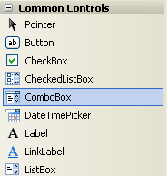
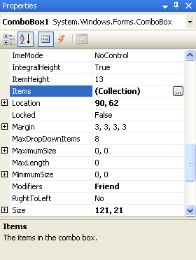
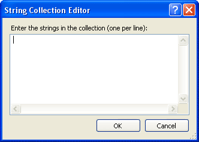
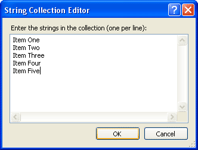
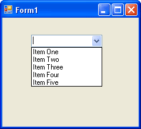

Add a Combo Box to a VB .NET form
Create a new project for this section. Add a button to your new form. Then, locate the Combo Box on the Visual Basic .NET toolbar. It looks like this:

Double click the icon to add a Combo Box to your form. Or click once with the left hand mouse button, and then draw one on the form.
A combo box is a way to limit the choices your user will have. When a black down-pointing arrow is clicked, a drop down list of items appears. The user can then select one of these options. So let's set it up to do that.
- Click on your Combo Box to select it. Then locate the Item property from the Properties Box:

- Click the grey button, as above. The one with the three dots in it. When you do, you'll get the following box popping up:

- To use the String Collection Editor, type an item and press Return (it's just like a normal textbox. Each item will be one item in your drop-down box.)
- Enter five items, as in the image below:

- Then click the OK button at the bottom.
The Editor will close, and it will look like nothing has happened. However, run your programme and test out your new Combo Box. You should have something like this:

You now need to know how to get values from the list. Once you know how to get a value from the list, you can put the value into a variable and test it with some Conditional logic.
No more reading these lessons online - get the eBook here!
Getting a value from a Combo Box is fairly straightforward, because it acts just like a Textbox. A Textbox has a Text property, and so does a Combo Box. To get a value from a Textbox, you would code like this
MyVariable = Textbox1.Text
Whatever is in the Textbox will be transferred to the variable called MyVariable. The process is exactly the same for a Combo Box. The code is like this:
MyVariable = Combobox1.Text
Now we are transferring whatever is selected from the Combo Box to the variable called MyVariable.
Let's try it. Double click the button you added to your form. This will open the code window. Then enter the following code for the button:
Dim MyVariable as String
MyVariable = Combobox1.Text
MsgBox MyVariable
Run your programme. When the programme is running, select an item from your
Combo Box. Then click your button. Whatever was in the Combo Box window should
have ended up in the Message Box.
And that's all there is to getting a value from a Combo Box - just access its Text Property and pass it to a variable.
Finally, the Combo Box has a DropDownStyle property. Locate this property and you'll notice its value has a drop down box. The box contains three different Combo Box styles to choose from. Experiment with all three and see how they differ.
In the next section, we'll take a look at Conditional Operators, what they are, and how to use them.